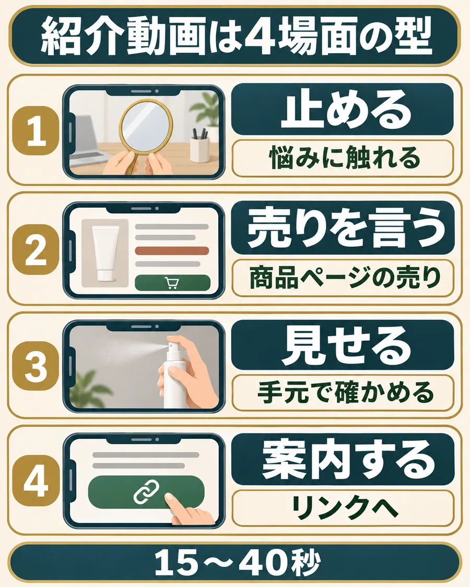

売れる紹介動画は、4場面でできている。
15〜40秒の紹介動画は、だいたいこの4場面。順番は毎回同じで、入れ替えるのは商品と言葉だけです。

作例は、メイクの上から使えるミスト化粧水（80ml、顔から20cm離して使う）です。
- 1止める（悩みに触れる）
「メイクしたまま、昼に乾燥が気になったことありませんか？」
映すもの：昼のデスクで、手鏡をのぞく手元。 - 2売りを言う（商品ページの売り）
「このミスト、メイクの上からそのまま使えるんです。」
映すもの：商品ページの「メイクの上から使える」の表示。 - 3見せる（手元で確かめられる場面）
「80ml入りです。顔から20cmくらい離して、シュッと吹きかけます。」
映すもの：容量の表示と、吹きかける手元。 - 4案内する（リンクへ）
「値段と詳しい使い方は、リンク先の商品ページで見てください。」
映すもの：自分の紹介リンクから開いた商品ページ。
最初の1〜2秒で、手を止める3つの入り方。
スワイプされるかどうかって、ほぼ最初の一言で決まるんですよね。同じミストでも、入り方は3つ作れます。
- 1｜悩みをそのまま言う
「メイクしたまま、昼に乾燥が気になったことありませんか？」
- 2｜意外な事実を言う
「乾燥対策って、メイクを落とさなくてもできるって知ってました？」
- 3｜選ぶときの迷いを言う
「昼に乾燥が気になっても、メイクの上から何を使えばいいか迷いませんか？」
どれを使っても、2場面目からは同じ。入り方だけ変えて3本作って、どれが一番止まるかを数字で比べます。
比べるときは、公開から同じ日数で、リンクのクリック数まで見てください。
「これを使わないと終わり」のような、商品ページで確かめられない言い切りはNG。止まっても、信用をなくしたら続きません。
売りは、「その人にとっての意味」に言い換える。
商品ページの売り
→メイクの上から使える
買う人にとっての意味
→昼でも、落とさずに使える
映像で見せる
商品ページの表示と、吹きかける手元
「メイクの上から使える」なら、「昼でもメイクを落とさずに使える」と言い換えて、その使い方を映します。
自分の商品でも、売りを一つ選んで「その人にとって何がうれしいか」に言い換えてから、映す場面を決めます。
4場面のセリフと映像を決める
公開前に見る2点
原稿の商品名・売り・使い方が、商品ページと合っているか。セリフが、各場面の映像で伝わるか。
4場面とも自分の商品の言葉になったら完成。次は最初の一言だけ変えて、もう2本作ってみてください。